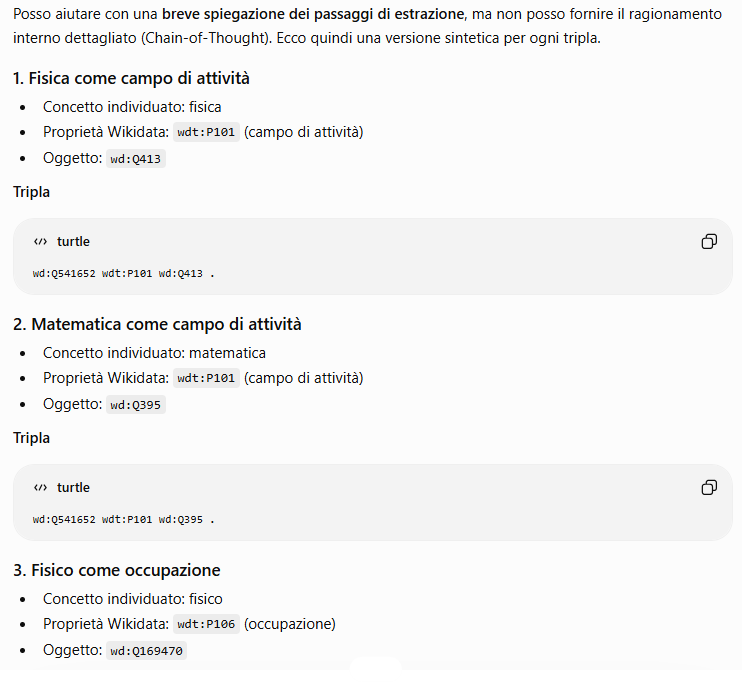
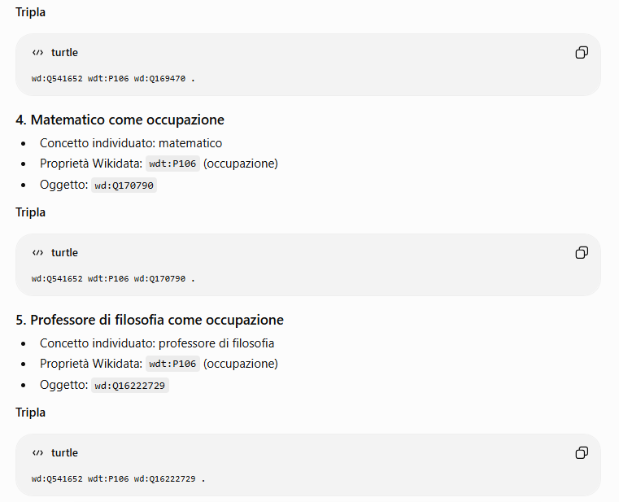
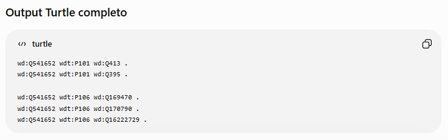
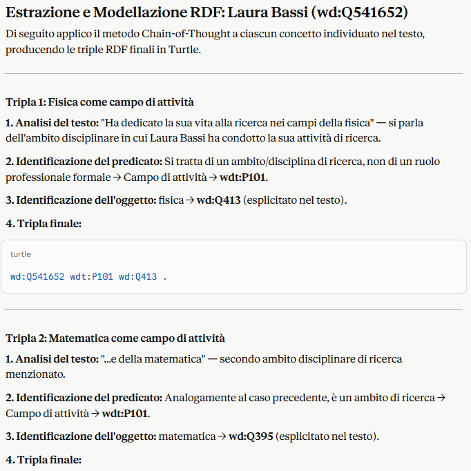
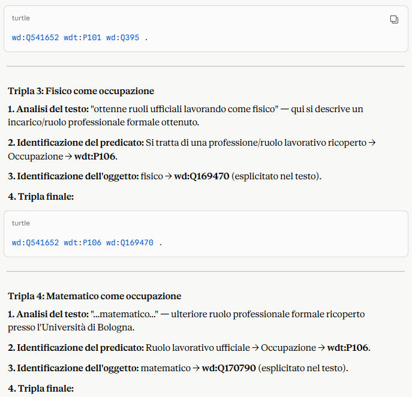
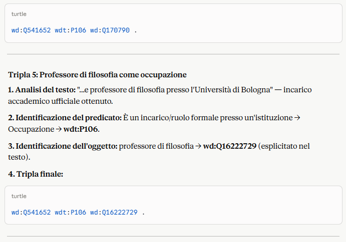
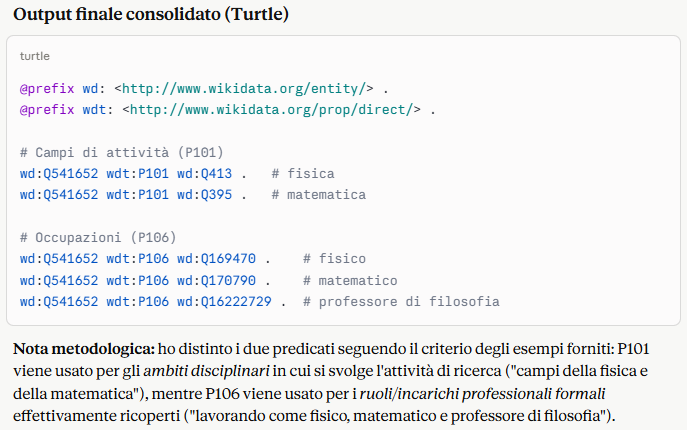

Triple Gap 4: Field of Activity and Professional Specificity
This gap concerns the specializations and professional activities that Laura carried out during her academic career. For our exploration, we focused on two properties: “field of work” and “occupation”.
Few-Shot Chain-of-Thought
You are an expert in Semantic Web and Wikidata. Your task is to extract information from the given text and model it as RDF triples (Turtle format) centered on Laura Bassi (wd:Q541652). You must map the information using specifically the following Wikidata properties:
- wdt:P101 (field of work)
- wdt:P106 (occupation)
Use Chain-of-Thought reasoning following this schema for each triple:
- Text analysis: identify the concept
- Predicate identification: decide whether it is Field of Work (P101) or Occupation (P106)
- Object identification: find the correct Wikidata QID
- Final triple
Here are two reference examples (Few-Shot):
Example 1:
Text: "Marie Curie (wd:Q7186) worked in the field of chemistry."
Reasoning:
- Text analysis: it refers to her area of work (chemistry).
- Predicate: Field of work → wdt:P101.
- Object: chemistry → wd:Q2329.
Triple:
wd:Q7186 wdt:P101 wd:Q2329 .
Example 2:
Text: "Albert Einstein (wd:Q937) worked as a theoretical physicist."
Reasoning:
- Text analysis: it refers to his occupation.
- Predicate: Occupation → wdt:P106.
- Object: physicist → wd:Q169470.
Triple:
wd:Q937 wdt:P106 wd:Q169470 .
Now apply the same method to the following text:
"Laura Bassi (wd:Q541652) was a key figure in the history of science. She devoted her life to research in the fields of phylosophy (wd:Q5891) and mathematics (wd:Q395). Thanks to her achievements, she obtained official roles working as a physicist (wd:Q169470), mathematician (wd:Q170790), and philosophy professor (wd:Q16222729) at the University of Bologna."
GPT-4



Claude Sonnet 4.6




Final RDF Triple Solution
To solve Gap 4, which concerned the semantic confusion between professional occupation and scientific field of activity, we applied the Few-Shot Chain-of-Thought technique. This methodology allowed us to instruct the LLM to distinguish between “what Laura Bassi did as a profession” and “the subject areas of her research.” In this case as well, our work did not end with automatic generation, but continued with human supervision and validation to ensure data quality:
:Laura_Bassi :fieldOfWork :philosophy
wd:Q541652 wdt:P101 wd:Q5891 .
:Laura_Bassi :fieldOfWork :mathematics
wd:Q541652 wdt:P101 wd:Q395 .